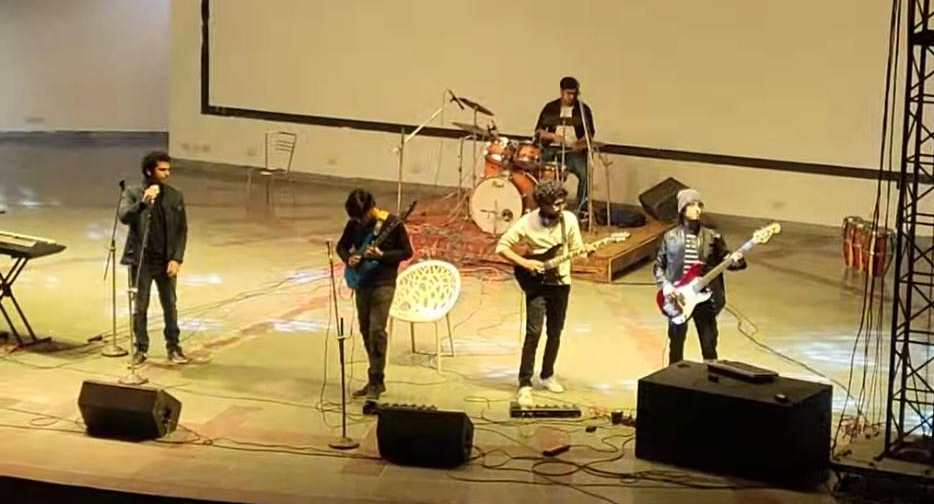
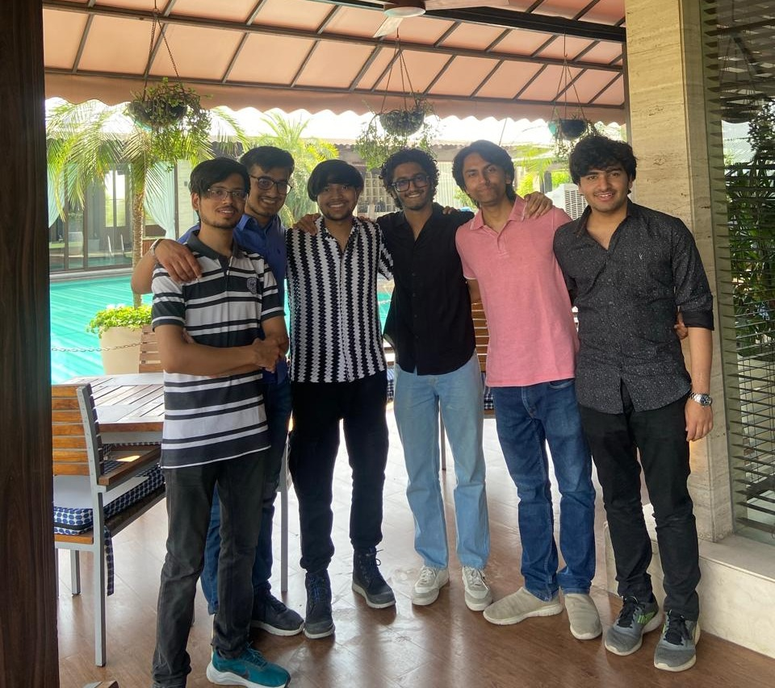
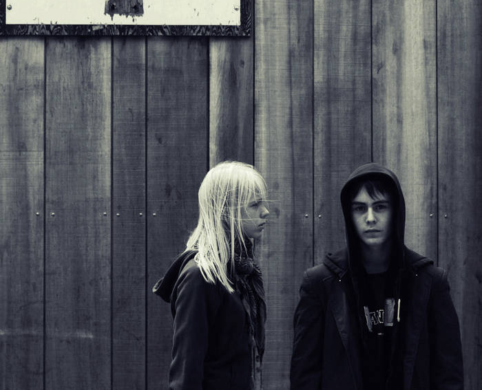
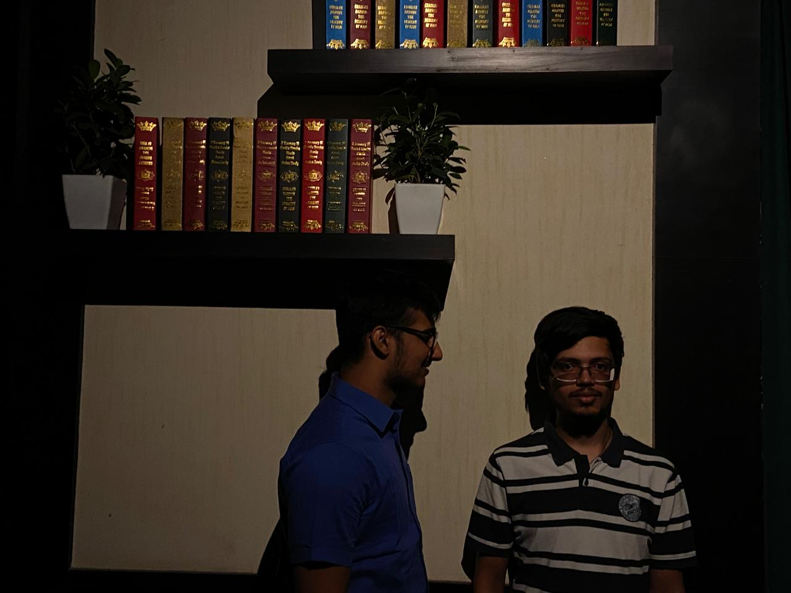
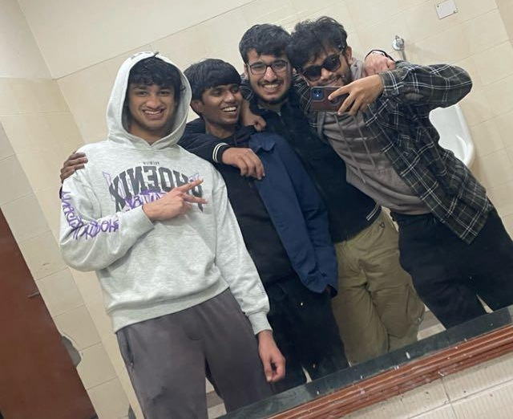
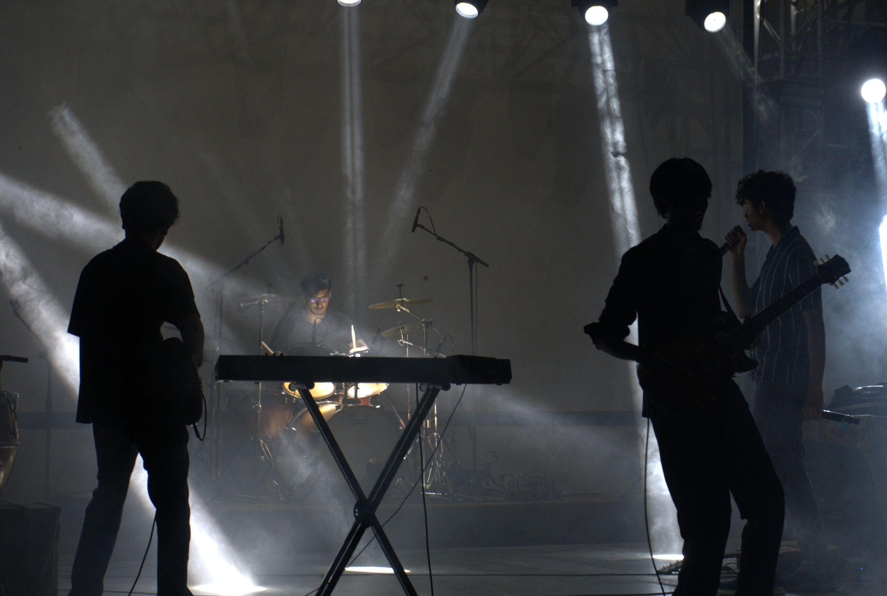
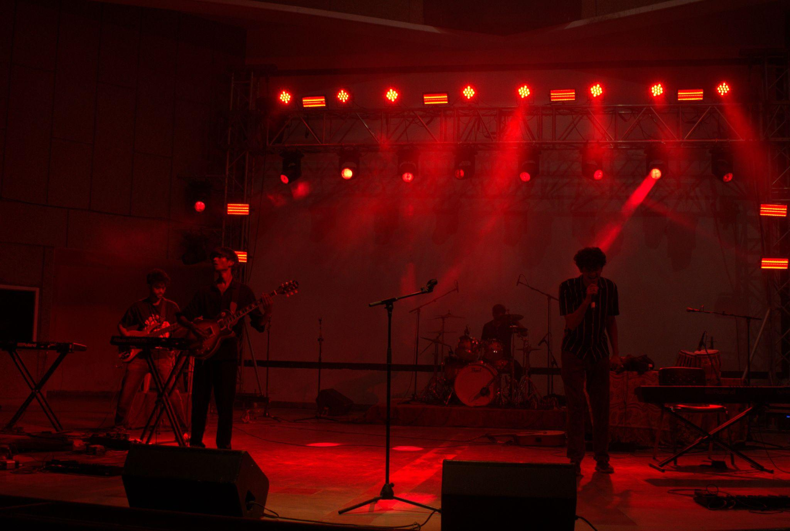
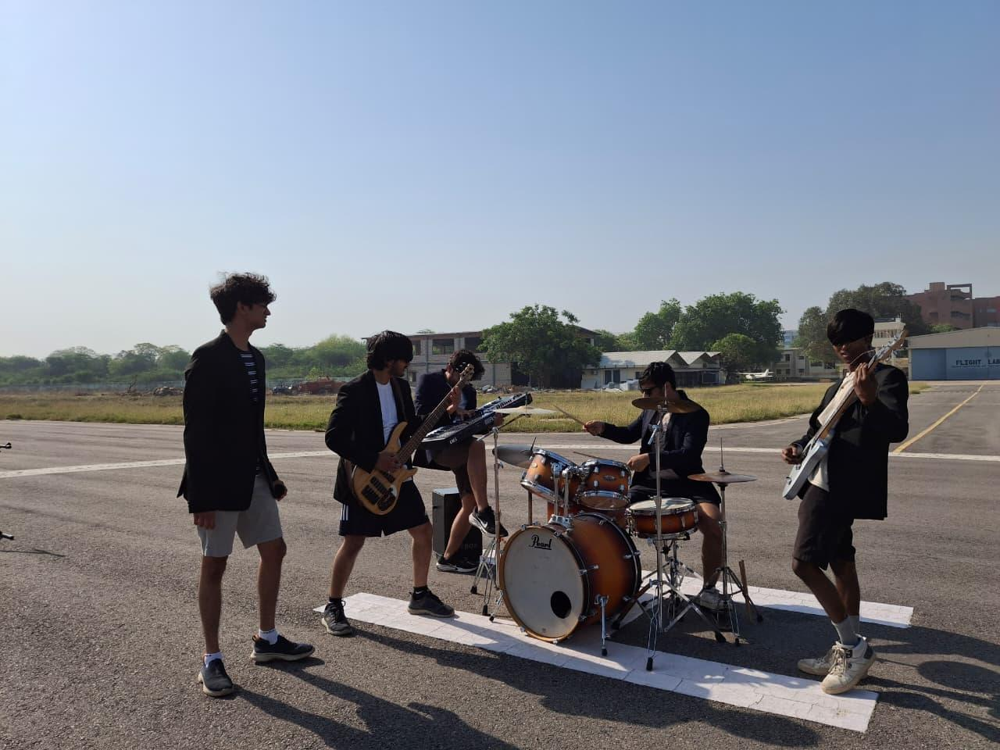

If you had asked me sometime during second year whether Music Club would become one of the most important parts of my college life, I would probably have laughed. Forget becoming a cordie. As a secy who almost got de-ratified, I wasn't even sure whether I belonged there.
I had learnt a little bit of drums during school and that was pretty much the reason I showed up for Freshers'. Since our first year was mostly asynchronous, there wasn't much happening apart from Freshers' and Galaxy. I enjoyed both, got to interact with some seniors and play a few songs, but Music Club wasn't really a major part of my life yet. At that point, it was just another activity I happened to be doing.
Things became different after becoming a secy, though not in the way I had imagined. Compared to the other drummers in the club, I wasn't particularly skilled. More importantly, my priorities were elsewhere. Most of my mental bandwidth was occupied by academics, coding, intern prep and I was in motorsports as well for some time, so that also used to eat up my time. Music Club slowly started feeling less like a place where I could relax and more like another responsibility waiting for me at the end of the day. Orientation wasn't particularly enjoyable. Neither was my first Musical Extravaganza. Picking parts felt like a burden. Runthroughs were serious, mistakes were immediately noticed, and whenever I missed a beat or messed something up, there was usually a stare or a scolding waiting for me. Most of it was deserved. I wasn't putting in enough effort and I definitely wasn't skilled enough to compensate for it.
Gradually, I started convincing myself that music simply wasn't for me. There were people around me who were much better musicians, much more invested and much more talented. I felt disconnected from the club and started drifting away from it. I skipped Acoustic Night so I could focus on CP and acads. I showed up less often. Then one fine day, I got de-ratified.
At that time, it felt terrible. I was upset of losing a POR after putting in effort for more than half a tenure. And like any second-year student trying to build a resume, I used to believe that a secy POR has an importance on my resume. Although very soon I realized, in tech, no one gives a shit about POR, at least second-year POR.
Around the same time, Galaxy season was approaching. Me and Vedant were the only two people from Hall 2 in Music Club and both of us had already been de-ratified. We were like fuck galaxy. Hall 3 looked stacked. Hall 5 looked stacked. Hall 12 looked stacked. We weren't discussing podium finishes. We were discussing whether we'd manage to finish above Hall 6.
Then the HEC seniors got involved. We told them even if we performed, what was the point? We had no realistic chance of competing with the halls that were packed with talent. But since we had fun doing galaxy the last time, we agreed for probably a last music performance in this college.
That decision changed my entire relationship with music. We stretched the budget, arranged the inventory and somehow convinced Shivang, Ritick, Akshat and Rajat Gattani to join us. Four days before Galaxy, we still hadn't properly started practicing. We chose Blackbird as our main song because Gattani had already picked the Mark Tremonti solo. Being the only drummer, I had to pick all three songs. The first runthrough was exactly what you'd expect when a team starts preparing four days before a competition. The juniors were struggling, the seniors were stepping in to rescue things, and nobody looked remotely ready.
I remember walking back after one of the runthroughs with Vedant and Shivang. We were talking about how we got kicked out of the secy group and lost our PORs when Shivang casually said, "Galaxy jeet jaao, POR se zyada badi baat hogi", and we laughed saying, "Aise haal me Hall 6 se upar aa jaye toh badi baat hogi".
But somewhere during those four days, something changed. For the first time, I genuinely enjoyed being there. I spent hours with Ritick, Gattani and Shivang, and the conversations were never limited to Galaxy. We talked about academics, internships, personal life, random frustrations and whatnot. Whenever I had some BT, they were the people I could discuss it with.
Galaxy day arrived and we had the final slot. Our first two performances were mostly there to involve juniors and satisfy participation requirements. Nobody really considered us contenders. Then came the final performance of the night. Since I was on stage, I didn't realize it then, but it was the tightest performance of the night.

And then we won. Somehow, the same group that had spent four days convincing itself it wasn't even in contention had won the whole thing. None of us had prepared emotionally for that possibility. I still think the trophy was the least important thing that came out of that experience. The important thing was that for the first time in college, I enjoyed playing music. Not winning. Playing.

After Galaxy, I wanted one more chance to perform with those seniors before they graduated. So I signed up for the second ME and requested a drum part in their song. When the part distribution sheet came out, my name appeared beside the drum part with a small question mark in front of it.
Honestly, I couldn't blame them. It was a difficult part and I wasn't sure I could pull it off either. The difference this time was that I wanted to. For the first time, I actually enjoyed picking difficult drum parts. I started showing up to runthroughs every day. During a semester that was otherwise dominated by CPI calculations, coding contests and internship preparation, the runthroughs became the best part of my day. Initially, I would seek advice from Shivang and Gattani regarding internship preparation. Slowly, those conversations drifted towards music. We discussed bands, exchanged recommendations, debated songs and spent hours imagining how we would perform on stage.
Without realizing it, I had fallen in love with the club. More importantly, I had fallen in love with being part of a band. For the first time, it felt so good to see all of us — me, Anisurya, Samprit, Vedant, Vasu, Shivang and Gattani growing together as a band. Instead of simply pointing out mistakes, we were helping each other fix them. Every runthrough felt slightly better than the previous one. Every performance felt more personal than the last.


Recreating Normal — Porcupine Tree cover photo
Even after ME ended, the journey didn't stop. During the summer, while solving Codeforces problems and spending long hours studying, I started listening to Porcupine Tree. That rabbit hole eventually introduced me to progressive metal and completely changed my taste in music. Fifth semester became a phase of exploration. I started listening to different genres, interacting more with seniors, taking increasingly difficult drum parts and trying to become a better musician. I always believe that your music taste is never truly yours, it's a mix of music taste of the people who you are influenced by. Shivang and Ritick introduced me to prog rock, Gattani introduced me to metal, Ujjawal introduced me to Techno, Pink Floyd and some Jazz and experimental, many people from the club introduced me to Dream Theatre, started listening to some hip hop and Kanye due to my wingies Sanchit and Adil, and Anisurya had a variety of all these.
That year, I also went to Mood Indigo for my first band competition. It was both humbling and inspiring. Watching so many talented musicians perform made me realize how much room there still was to grow. Around the same time, I became obsessed with Tool and desperately wanted us to perform a Tool song in the next ME. Unfortunately, Arnav had different plans to do a Karnivool song and there wasn't enough room in the setlist. I was disappointed, but it was probably one of the best things that happened. We did that song together, had a great experience performing with Arnav and as usual Samprit was obviously there (in all my fucking songs I did at Mclub).
During Internship days, one fine day I decided to travel to Bangalore to meet Anisurya and Samprit so that we can not be sober. We were just chilling in a room, listening to music, and there we discovered our shared interest in Karnivool. We listened to their discography and fell in love with their music. That's when we decided we are going to perform Karnivool and Tool songs together before we graduate.
In my final year, I started spending a lot of time at Mclub, listening to different kinds of music, practicing Tool and Karnivool songs, interacting with juniors and batchmates and just being there in the club. That's when the meaning of Mclub changed from Music Club to My Club for me.

Me and Anisurya used to listen to Themata live version a lot whenever we used to chill together, and soon it became our goal to perform this version on the OAT stage. 3 months before the graduating ME, me, Anisurya, Samprit and Vedant went to Dream Theatre's concert and we spent 6 hours in the airport lounge discussing and planning how we would perform Themata as the last song of the event, how the lighting would be, how me and Anisurya would go shirtless on the stage, how I would start hitting gym so I can look somewhat like Steve Judd (drummer, Karnivool), how Samprit would mimic Ian Kenny (vocalist, Karnivool) and whatnot. We all were just too excited to execute our year long plan.
Contrary to our plans, when we start doing runthroughs of Themata together, nothing was coming right. Anisurya couldn't play the intro riff, my transitions were not smooth and overall nothing was in sync. At that point, for me, nothing mattered more than bringing this song tight. I used to practice 4–5 hours a day for it, trying to improve every small mistake I was making, and then hit the gym or go swimming. My goal was to practice this song so much that I'd never lose grip of control. Themata was indeed the hardest song I played during my 4 years, but man, it was so fun.
We almost lost hope at one point, but we kept each other motivated and didn't stop practising. Finally, 3 days before the event, it started coming out tight. But on the event day, nothing went as per our plans. Due to uncontrollable factors, there was chaos and shortage of time during the event. Minutes before, we weren't even sure whether we will be able to perform the full song or not. I could feel the pressure belonging to all. Plans of having the perfect lighting, going shirtless, giving the performance of all time — all these just remained plans because simply there wasn't time nor the peace of mind to execute these things. Obviously, it was not the end we wanted but that's what real life is. You always don't get the perfect end to your journey.


In first year, a Mclub senior told me why he does events every year — it was because of the thrill you get while performing on the stage. For me it was never the thrill that mattered, it was the runthroughs. The cycle of doing an event in Mclub depicts the human life perfectly. You have a goal — the final performance. You work towards it by showing up daily — the runthroughs. Fun is never achieving the goal, you never know you could have a bad performance due to factors not in your hands and you might fail to achieve the goal, but what brings you back into the cycle is the fun you had in the process of achieving that goal, the fun you had interacting with different people during runthroughs, the fun you had in working towards a common goal. That is what's irreplaceable.

Following the tradition, it was the time for end tenure party — a party given collectively by the graduating batch. It was real fun hosting a party on such a large scale — me, Akshat and Anisurya spent days finalising the venue, budget, food, and most importantly making a (wish)list of quality liquors. As a tradition, me and Anisurya went to Gurgaon with 2 empty suitcases and a duffel bag to do shopping for liquors. We were literally selecting all the bottles we wanted to taste in our lives, but ultimately had to put control on our budget. Also, the tradition of someone being in loss after party was also fulfilled — it was me this year. I hope someday I'll receive the contri of 8k I spent from my pocket.
Across all four years, the songs were just an excuse. The real reason I kept coming back was the people. I joined because I knew a little drumming. I stayed because every year there was another song to play, another runthrough to attend, and another excuse to spend time with people I genuinely enjoyed being around. Somewhere along the way, Music Club became My Club. And I think that's the reason I kept coming back.
For me, Mclub meant a lot of things through these 4 years — Music Club, My Club, Masti Club and sometimes Mclub.